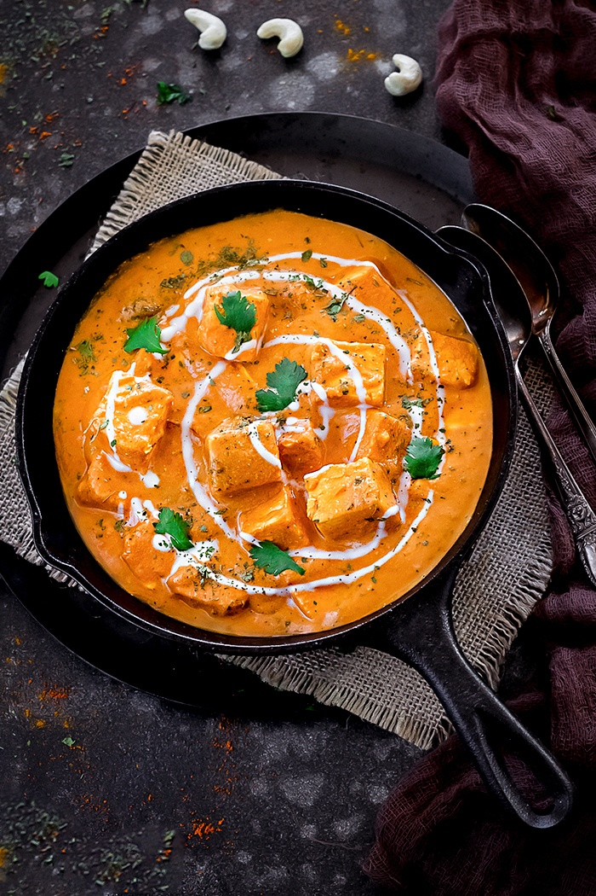

Paneer Butter Masala is a rich, creamy North Indian curry made with a base of blended tomatoes, onions, and cashews, finished with butter, fresh cream, and kasuri methi (dried fenugreek leaves).
To prepare a restaurant-style version:
- Make the base paste:Sauté 2 chopped onions, 3–4 tomatoes, 10–15 soaked cashews, ginger, and garlic until soft. Blend into a smooth puree.
- Cook the Gravy:Heat butter and oil in a pan, then sauté whole spices (cinnamon, cloves, cardamom). Add the puree and cook on medium heat until oil separates from the mixture.
- Add Spices:Stir in Kashmiri red chili powder, turmeric, coriander powder, and garam masala. Add a splash of water to adjust consistency.
- Finish the Curry:Add paneer cubes and simmer for 2–3 minutes. Turn off the heat and mix in fresh cream, crushed kasuri methi, and a final dollop of butter for gloss.
- Serve:Garnish with chopped coriander leaves and serve hot with naan, roti, or rice.
Key techniques for authenticity include blanching tomatoes before blending for a smoother texture and ensuring the gravy is cooked until oil floats to the top to develop deep flavor.
